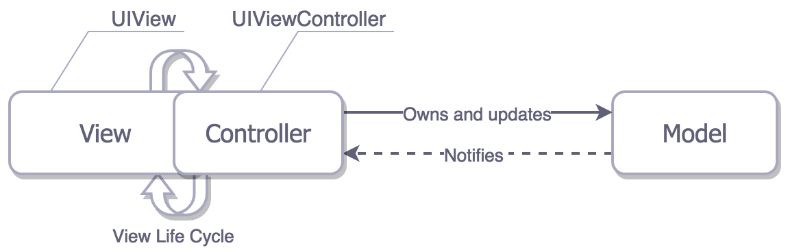
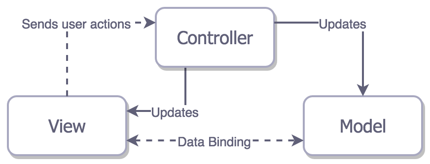
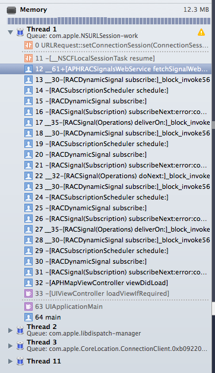
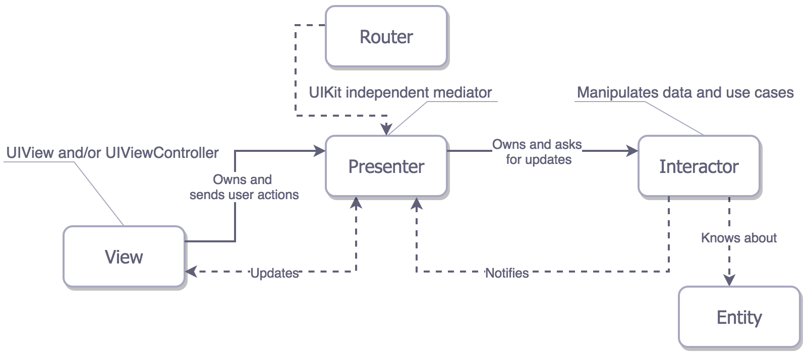

&description=<h1 id="前言"><a href="#前言" class="headerlink" title="前言"></a>前言</h1><blockquote>
<p><em>Make everything as simple as possible, but not simpler — Albert Einstein.</em> </p>
<p>把每件事，做简单到极致，但又不过于简单 - 阿尔伯特·爱因斯坦</p>
</blockquote>
<p>在使用 iOS 的 <code>MVC</code> 时候感觉怪怪的？想要尝试下 <code>MVVM</code>？之前听说过 <code>VIPER</code>，但是又纠结是不是值得去学？</p>
<p>继续阅读，你就会知道上面问题的答案 - 如果读完了还是不知道的话，欢迎留言评论。</p>
<p><code>iOS</code> 上面的架构模式你可能之前就了解过一些，接下来我们会帮你把它们进行一下梳理。我们先简要回顾一下目前比较主流的架构模式，分析比较一些他们的原理，并用一些小栗子来进行练习。如果你对其中的某一种比较感兴趣的话，我们也在文章里面给出了对应的链接。</p>
<p><em>对于设计模式的学习是一件容易上瘾的事情，所以先提醒你一下：在你读完这篇文章之后，可能会比读之前有更多的疑问，比如：</em></p>
<ul>
<li><p><em>（MVC）谁来负责网络请求：是 <code>Model</code> 还是 <code>Controller</code>？</em></p>
</li>
<li><p><em>（MVVM）我该怎么去把一个 <code>Model</code> 传递给一个新创建的 <code>View</code> 的 <code>ViewModel</code>？</em></p>
</li>
<li><p><em>（VIPER）谁来负责创建 <code>VIPER</code> 模块：是 Router 还是 <code>Presenter</code>？</em></p>
</li>
</ul>
<p><img src="iOS-架构模式-简述-MVC-MVP-MVVM-和-VIPER-转/1*79nWxPpKgL7JGjYp0HrT6A.png" alt="image"></p>){kind=link}
iOS 架构模式 - 简述 MVC, MVP, MVVM 和 VIPER (转)
前言
Make everything as simple as possible, but not simpler — Albert Einstein.
把每件事，做简单到极致，但又不过于简单 - 阿尔伯特·爱因斯坦
在使用 iOS 的 MVC 时候感觉怪怪的？想要尝试下 MVVM？之前听说过 VIPER，但是又纠结是不是值得去学？
继续阅读，你就会知道上面问题的答案 - 如果读完了还是不知道的话，欢迎留言评论。
iOS 上面的架构模式你可能之前就了解过一些，接下来我们会帮你把它们进行一下梳理。我们先简要回顾一下目前比较主流的架构模式，分析比较一些他们的原理，并用一些小栗子来进行练习。如果你对其中的某一种比较感兴趣的话，我们也在文章里面给出了对应的链接。
对于设计模式的学习是一件容易上瘾的事情，所以先提醒你一下：在你读完这篇文章之后，可能会比读之前有更多的疑问，比如：
（MVC）谁来负责网络请求：是
Model还是Controller？（MVVM）我该怎么去把一个
Model传递给一个新创建的View的ViewModel？（VIPER）谁来负责创建
VIPER模块：是 Router 还是Presenter？
为何要在意架构的选择呢？
因为如果你不在意的话，难保一天，你就需要去调试一个巨大无比又有着各种问题的类，然后你会发现在这个类里面，你完全就找不到也修复不了任何 bug。一般来说，把这么大的一个类作为整体放在脑子里记着是一件非常困难的事情，你总是难免会忘掉一些比较重要的细节。如果你发现在你的应用里面已经开始出现这种状况了，那你很可能遇到过下面这类问题：
- 这个类是一个
UIViewController的子类。 - 你的数据直接保存在了
UIViewController里面。 - 你的 UIViews 好像什么都没做。
- 你的 Model 只是一个纯粹的数据结构
- 你的单元测试什么都没有覆盖到
其实即便你遵循了 Apple 的设计规范，实现了 Apple 的 MVC 框架，也还是一样会遇到上面这些问题；所以也没什么好失落的。Apple 的 MVC 框架 有它自身的缺陷，不过这个我们后面再说。
让我们先来定义一下好的框架应该具有的特征：
- 用严格定义的角色，平衡的将职责 划分 给不同的实体。
- 可测性 通常取决于上面说的第一点（不用太担心，如果架构何时的话，做到这点并不难）。
- 易用 并且维护成本低。
为什么要划分？
当我们试图去理解事物的工作原理的时候，划分可以减轻我们的脑部压力。如果你觉得开发的越多，大脑就越能适应去处理复杂的工作，确实是这样。但是大脑的这种能力不是线性提高的，而且很快就会达到一个瓶颈。所以要处理复杂的事情，最好的办法还是在遵循 单一责任原则 的条件下，将它的职责划分到多个实体中去。
为什么要可测性？
对于那些对单元测试心存感激的人来说，应该不会有这方面的疑问：单元测试帮助他们测试出了新功能里面的错误，或者是帮他们找出了重构的一个复杂类里面的 bug。这意味着这些单元测试帮助这些开发者们在程序运行之前就发现了问题，这些问题如果被忽视的话很可能会提交到用户的设备上去；而修复这些问题，又至少需要一周左右的时间（AppStore 审核）。
为什么要易用
这块没什么好说的，直说一点：最好的代码是那些从未被写出来的代码。代码写的越少，问题就越少；所以开发者想少写点代码并不一定就是因为他懒。还有，当你想用一个比较 聪明 的方法的时候，全完不要忽略了它的维护成本。
MV(X) 的基本要素
现在我们面对架构设计模式的时候有了很多选择：
- MVC
- MVP
- MVVM
VIPER
首先前三种模式都是把所有的实体归类到了下面三种分类中的一种：Models（模型） — 数据层，或者负责处理数据的 数据接口层。比如 Person 和 PersonDataProvider 类
- Views（视图） - 展示层(GUI)。对于 iOS 来说所有以 UI 开头的类基本都属于这层。
Controller/Presenter/ViewModel（控制器/展示器/视图模型） - 它是 Model 和 View 之间的胶水或者说是中间人。一般来说，当用户对 View 有操作时它负责去修改相应 Model；当 Model 的值发生变化时它负责去更新对应 View。
将实体进行分类之后我们可以：更好的理解
- 重用（主要是 View 和 Model）
- 对它们独立的进行测试
让我从 MV(X) 系列开始讲起，最后讲 VIPER。
MVC - 它原来的样子

在开始讨论 Apple 的 MVC 之前，我们先来看下 传统的 MVC。
在这种架构下，View 是无状态的，在 Model 变化的时候它只是简单的被 Controller 重绘；就像网页一样，点击了一个新的链接，整个网页就重新加载。尽管这种架构可以在 iOS 应用里面实现，但是由于 MVC 的三种实体被紧密耦合着，每一种实体都和其他两种有着联系，所以即便是实现了也没有什么意义。这种紧耦合还戏剧性的减少了它们被重用的可能，这恐怕不是你想要在自己的应用里面看到的。综上，传统 MVC 的例子我觉得也没有必要去写了。
传统的 MVC 已经不适合当下的 iOS 开发了。
Apple 的 MVC
理想

View 和 Model 之间是相互独立的，它们只通过 Controller 来相互联系。有点恼人的是 Controller 是重用性最差的，因为我们一般不会把冗杂的业务逻辑放在 Model 里面，那就只能放在 Controller 里了。
理论上看这么做貌似挺简单的，但是你有没有觉得有点不对劲？你甚至听过有人把 MVC 叫做重控制器模式。另外 关于 ViewController 瘦身 已经成为 iOS 开发者们热议的话题了。为什么 Apple 要沿用只是做了一点点改进的传统 MVC 架构呢？
现实

Cocoa MVC 鼓励你去写重控制器是因为 View 的整个生命周期都需要它去管理，Controller 和 View 很难做到相互独立。虽然你可以把控制器里的一些业务逻辑和数据转换的工作交给 Model，但是你再想把负担往 View 里面分摊的时候就没办法了；因为 View 的主要职责就只是讲用户的操作行为交给 Controller 去处理而已。于是 ViewController 最终就变成了所有东西的代理和数据源，甚至还负责网络请求的发起和取消，还有…剩下的你来讲。
像下面这种代码你应该不陌生吧：
1 | var userCell = tableView.dequeueReusableCellWithIdentifier("identifier") as UserCell |
Cell 作为一个 View 直接用 Model 来完成了自身的配置，MVC 的原则被打破了，这种情况一直存在，而且还没人觉得有什么问题。如果你是严格遵循 MVC 的话，你应该是在 ViewController 里面去配置 Cell，而不是直接将 Model 丢给 Cell，当然这样会让你的 ViewController 更重。
Cocoa MVC 被戏称为重控制器模式还是有原因的。
问题直到开始 单元测试（希望你的项目里面已经有了）之后才开始显现出来。Controller 测试起来很困难，因为它和 View 耦合的太厉害，要测试它的话就需要频繁的去 mock View 和 View 的生命周期；而且按照这种架构去写控制器代码的话，业务逻辑的代码也会因为视图布局代码的原因而变得很散乱。
我们来看下面这段 playground 中的例子：
1 | import UIKit |
MVC 的组装，可以放在当前正在显示的 ViewController 里面
这段代码看起来不太好测试对吧？我们可以把greeting的生成方法放到一个新类GreetingModel里面去单独测试。但是我们如果不调用与 View 相关的方法的话 （viewDidLoad, didTapButton），就测试不到GreetingViewController里面任何的显示逻辑（虽然在上面这个例子里面，逻辑已经很少了）；而调用的话就可能需要把所有的 View 都加载出来，这对单元测试来说太不利了。
实际上，在模拟器（比如 iPhone 4S）上运行并测试 View 的显示并不能保证在其他设备上（比如 iPad）也能良好运行。所以我建议把「Host Application」从你的单元测试配置项里移除掉，然后在不启动模拟器的情况下去跑你的单元测试。
View 和 Controller 之间的交互，并不能真正的被单元测试覆盖。
综上所述，Cocoa MVC 貌似并不是一个很好的选择。但是我们还是评估一下他在各方面的表现（在文章开头有讲）：
- 划分 - View 和 Model 确实是实现了分离，但是 View 和 Controller 耦合的太厉害
- 可测性 - 因为划分的不够清楚，所以能测的基本就只有 Model 而已
- 易用 - 相较于其他模式，它的代码量最少。而且基本上每个人都很熟悉它，即便是没太多经验的开发者也能维护。
在这种情况下你可以选择 Cocoa MVC：你并不想在架构上花费太多的时间，而且你觉得对于你的小项目来说，花费更高的维护成本只是浪费而已。如果你最看重的是开发速度，那么 Cocoa MVC 就是你最好的选择。
MVP - 保证了职责划分的（promises delivered） Cocoa MVC

看起来确实很像 Apple 的 MVC 对吧？确实蛮像，它的名字是 MVP（被动变化的 View）。稍等…这个意思是说 Apple 的 MVC 实际上是 MVP 吗？不是的，回想一下，在 MVC 里面 View 和 Controller 是耦合紧密的，但是对于 MVP 里面的 Presenter 来讲，它完全不关注 ViewController 的生命周期，而且 View 也能被简单 mock 出来，所以在 Presenter 里面基本没什么布局相关的代码，它的职责只是通过数据和状态更新 View。
如果我跟你讲 UIViewController 在这里的角色其实是 View 你感觉如何。
在 MVP 架构里面，UIViewController 的那些子类其实是属于 View 的，而不是 Presenter。这种区别提供了极好的可测性，但是这是用开发速度的代价换来的，因为你必须要手动的去创建数据和绑定事件，像下面这段代码中做的一样：
1 | import UIKit |
关于组装方面的重要说明
MVP 架构拥有三个真正独立的分层，所以在组装的时候会有一些问题，而 MVP 也成了第一个披露了这种问题的架构。因为我们不想让 View 知道 Model 的信息，所以在当前的 ViewController（角色其实是 View）里面去进行组装肯定是不正确的，我们应该在另外的地方完成组装。比如，我们可以创建一个应用层（app-wide）的 Router 服务，让它来负责组装和 View-to-View 的转场。这个问题不仅在 MVP 中存在，在接下来要介绍的模式里面也都有这个问题。
让我们来看一下 MVP 在各方面的表现：
- 划分 - 我们把大部分的职责都分配到了 Presenter 和 Model 里面，而 View 基本上不需要做什么（在上面的例子里面，Model 也什么都没做）。
- 可测性 - 简直棒，我们可以通过 View 来测试大部分的业务逻辑。
- 易用 - 就我们上面那个简单的例子来讲，代码量差不多是 MVC 架构的两倍，但是 MVP 的思路还是蛮清晰的。
MVP 架构在 iOS 中意味着极好的可测性和巨大的代码量。
MVP - 添加了数据绑定的另一个版本

还存在着另一种的 MVP - Supervising Controller MVP。这个版本的 MVP 包括了 View 和 Model 的直接绑定，与此同时 Presenter（Supervising Controller）仍然继续处理 View 上的用户操作，控制 View 的显示变化。
但是我们之前讲过，模糊的职责划分是不好的事情，比如 View 和 Model 的紧耦合。这个道理在 Cocoa 桌面应用开发上面也是一样的。
就像传统 MVC 架构一样，我找不到有什么理由需要为这个有瑕疵的架构写一个例子。
MVVM - 是 MV(X) 系列架构里面最新兴的，也是最出色的

MVVM 架构是 MV(X) 里面最新的一个，让我们希望它在出现的时候已经考虑到了 MV(X) 模式之前所遇到的问题吧。
理论上来说，Model - View - ViewModel 看起来非常棒。View 和 Model 我们已经都熟悉了，中间人的角色我们也熟悉了，但是在这里中间人的角色变成了 ViewModel。
它跟 MVP 很像：
- MVVM 架构把 ViewController 看做 View。
- View 和 Model 之间没有紧耦合
另外，它还像 Supervising 版的 MVP 那样做了数据绑定，不过这次不是绑定 View 和 Model，而是绑定 View 和 ViewModel。
那么，iOS 里面的 ViewModel 到底是个什么东西呢？本质上来讲，他是独立于 UIKit 的， View 和 View 的状态的一个呈现（representation）。ViewModel 能主动调用对 Model 做更改，也能在 Model 更新的时候对自身进行调整，然后通过 View 和 ViewModel 之间的绑定，对 View 也进行对应的更新。
绑定
我在 MVP 的部分简单的提过这个内容，在这里让我们再延伸讨论一下。绑定这个概念源于 OS X 平台的开发，但是在 iOS 平台上面，我们并没有对应的开发工具。当然，我们也有 KVO 和 通知，但是用这些方式去做绑定不太方便。
那么，如果我们不想自己去写他们的话，下面提供了两个选择：
- 选一个基于 KVO 的绑定库，比如 RZDataBinding 或者 SwiftBond。
- 使用全量级的 函数式响应编程 框架,比如 ReactiveCocoa、RxSwift 或者 PromiseKit。
实际上，现在提到「MVVM」你应该就会想到ReactiveCocoa，反过来也是一样。虽然我们可以通过简单的绑定来实现 MVVM 模式，但是ReactiveCocoa（或者同类型的框架）会让你更大限度的去理解 MVVM。
响应式编程框架也有一点不好的地方，能力越大责任越大嘛。用响应式编程用得不好的话，很容易会把事情搞得一团糟。或者这么说，如果有什么地方出错了，你需要花费更多的时间去调试。看着下面这张调用堆栈图感受一下：

在接下来的这个小例子中，用响应式框架（FRF）或者 KVO 都显得有点大刀小用，所以我们用另一种方式：直接的调用 ViewModel 的 showGreeting 方法去更新自己（的 greeting 属性），（在 greeting 属性的 didSet 回调里面）用 greetingDidChange 闭包函数去更新 View 的显示。
1 | import UIKit |
然后，我们再回过头来对它各方面的表现做一个评价：
- 划分 - 这在我们的小栗子里面表现的不是很清楚，但是 MVVM 框架里面的 View 比 MVP 里面负责的事情要更多一些。因为前者是通过 ViewModel 的数据绑定来更新自身状态的，而后者只是把所有的事件统统交给 Presenter 去处理就完了，自己本身并不负责更新。
- 可测性 - 因为 ViewModel 对 View 是一无所知的，这样我们对它的测试就变得很简单。View 应该也是能够被测试的，但是可能因为它对 UIKit 的依赖，你会直接略过它。
- 易用 - 在我们的例子里面，它的代码量基本跟 MVP 持平，但是在实际的应用当中 MVVM 会更简洁一些。因为在 MVP 下你必须要把 View 的所有事件都交给 Presenter 去处理，而且需要手动的去更新 View 的状态；而在 MVVM 下，你只需要用绑定就可以解决。
MVVM 真的很有魅力，因为它不仅结合了上述几种框架的优点，还不需要你为视图的更新去写额外的代码（因为在 View 上已经做了数据绑定），另外它在可测性上的表现也依然很棒。
VIPER - 把搭建乐高积木的经验应用到 iOS 应用的设计上

VIPER 是我们最后一个要介绍的框架，这个框架比较有趣的是它不属于任何一种 MV(X) 框架。
到目前为止，你可能觉得我们把职责划分成三层，这个颗粒度已经很不错了吧。现在 VIPER 从另一个角度对职责进行了划分，这次划分了 五层。
- Interactor（交互器） - 包括数据（Entities）或者网络相关的业务逻辑。比如创建新的 entities 或者从服务器上获取数据；要实现这些功能，你可能会用到一些服务和管理（Services and Managers）：这些可能会被误以为成是外部依赖东西，但是它们就是 VIPER 的 Interactor 模块。
- Presenter（展示器） - 包括 UI（but UIKit independent）相关的业务逻辑，可以调用 Interactor 中的方法。
- Entities（实体） - 纯粹的数据对象。不包括数据访问层，因为这是 Interactor 的职责。
- Router（路由） - 负责 VIPER 模块之间的转场
实际上 VIPER 模块可以只是一个页面（screen），也可以是你应用里整个的用户使用流程（the whole user story）- 比如说「验证」这个功能，它可以只是一个页面，也可以是连续相关的一组页面。你的每个「乐高积木」想要有多大，都是你自己来决定的。
如果我们把 VIPER 和 MV(X) 系列做一个对比的话，我们会发现它们在职责划分上面有下面的一些区别：
- Model（数据交互）的逻辑被转移到了 Interactor 里面，Entities 只是一个什么都不用做的数据结构体。
- Controller/Presenter/ViewModel 的职责里面，只有 UI 的展示功能被转移到了 Presenter 里面。Presenter 不具备直接更改数据的能力。
- VIPER 是第一个把导航的职责单独划分出来的架构模式，负责导航的就是 Router 层。
如何正确的使用导航（doing routing）对于 iOS 应用开发来说是一个挑战，MV(X) 系列的架构完全就没有意识到（所以也不用处理）这个问题。
下面的这个列子并没有涉及到导航和 VIPER 模块间的转场，同样上面 MV(X) 系列架构里面也都没有涉及。
1 | import UIKit |
我们再来评价下它在各方面的表现：
- 划分 - 毫无疑问的，VIPER 在职责划分方面是做的最好的。
- 可测性 - 理所当然的，职责划分的越好，测试起来就越容易
- 易用 - 最后，你可能已经猜到了，上面两点好处都是用维护性的代价换来的。一个小小的任务，可能就需要你为各种类写大量的接口。
那么，我们到底应该给「乐高」一个怎样的评价呢？
如果你在使用 VIPER 框架的时候有一种在用乐高积木搭建帝国大厦的感觉，那么你可能 正在犯错误；可能对于你负责的应用来说，还没有到使用 VIPER 的时候，你应该把一些事情考虑的再简单一些。总是有一些人忽视这个问题，继续扛着大炮去打小鸟。我觉得可能是因为他们相信，虽然目前来看维护成本高的不合常理，但是至少在将来他们的应用可以从 VIPER 架构上得到回报吧。如果你也跟他们的观点一样的话，那我建议你尝试一下 Generamba - 一个可以生成 VIPER 框架的工具。虽然对于我个人来讲，这感觉就像给大炮装上了一个自动瞄准系统，然后去做一件只用弹弓就能解决的事情。
结论
我们简单了解了几种架构模式，对于那些让你困惑的问题，我希望你已经找到了答案。但是毫无疑问，你应该已经意识到了，在选择架构模式这件问题上面，不存在什么 银色子弹，你需要做的就是具体情况具体分析，权衡利弊而已。
因此在同一个应用里面，即便有几种混合的架构模式也是很正常的一件事情。比如：开始的时候，你用的是 MVC 架构，后来你意识到有一个特殊的页面用 MVC 做的的话维护起来会相当的麻烦；这个时候你可以只针对这一个页面用 MVVM 模式去开发，对于之前那些用 MVC 就能正常工作的页面，你完全没有必要去重构它们，因为两种架构是完全可以和睦共存的。
更新：这里有个简短的 PPT